Immersing Indian Culture - Garden of Gods - Penang (George Town)
Malaysia is located at the intersection of the East and West, including Chinese, Islamic, Indian, and Western cultures. If you are interested in ancient culture as I do, Malaysia would be a great fit.
In this article, I will share a 2-day (09.12.23-10.12.23) Indian culture forum and Hinduism temple guided tour at George Town, Penang (Malaysia).
Before the story starts, I want to give credit to the lecturer, Mr. Tang Ah Chai (陳亞才), the organizer Penang City Eye 城視報 & Penang Harmony Corporation, and the participants.
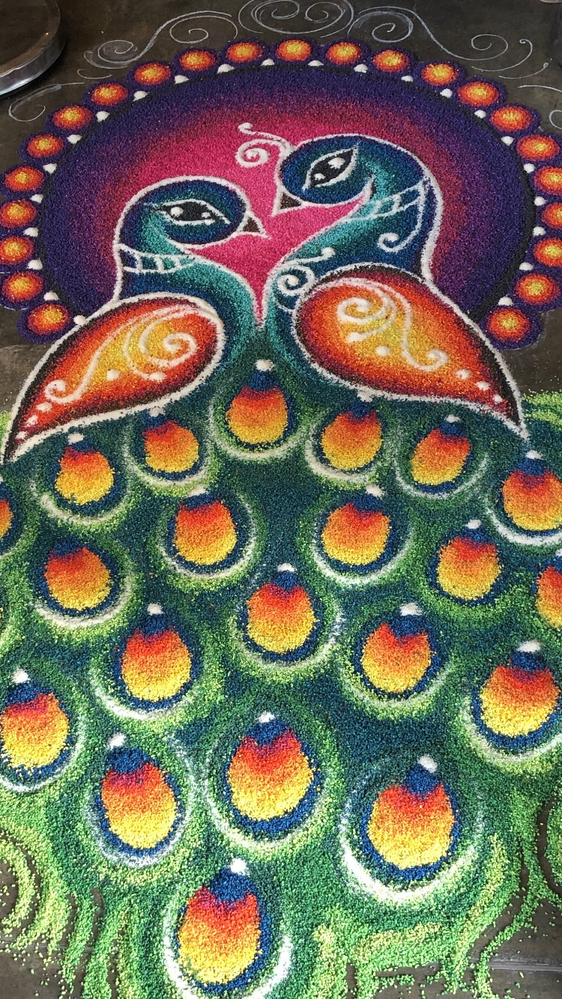
Cultural activities and engagement are always interesting to me. Since childhood, my eyes have been caught by vivid cultural things such as Chinese, Indian, Indonesian, Malaysian, and Islamic cultures. With the background and foundation of Chinese culture, it immensely strengthens my understanding and appreciation of other cultures.
In the Chinese ancient classic “I-Ching (The Book of Changes),” it said, “觀乎天文，以察時變；觀乎人文，以化成天下。,” means that by observing the movement of constellations, we can learn about the change of seasons; by observing development of human culture, we can enlighten the people and build a civilized society.
Introduction
Malaysia is a multi-ethnic country, with 60% of the population being Malays (nearly 20 million), almost 22.6% Chinese (around 6 million), and 7% Indians (about 2 million), with 90% of Indian ancestors coming from Tamil Nadu and the rest being aboriginals and other ethnic groups.
After this brief overview of the population proportion in Malaysia, let’s dive into the topic “Immersing Indian Culture - Garden of Gods.”
This forum schedule is shown below:
09/12/2023 (Saturday):
- Forum: Indian Culture and History & Classics Introduction (8:30 - 16:00)
- Guided Tour: Penang Indian Heritage Museum & Penang Nagarathar Sivan Temple (17:00 - 19:30)
10/12/2023 (Sunday):
- Guided Tour: Sri Varasithi Vinayagar Temple & Arulmigu Sri Mahamariamman Temple & Nagarathar Kovil Veedu (9:00 - 11:30)

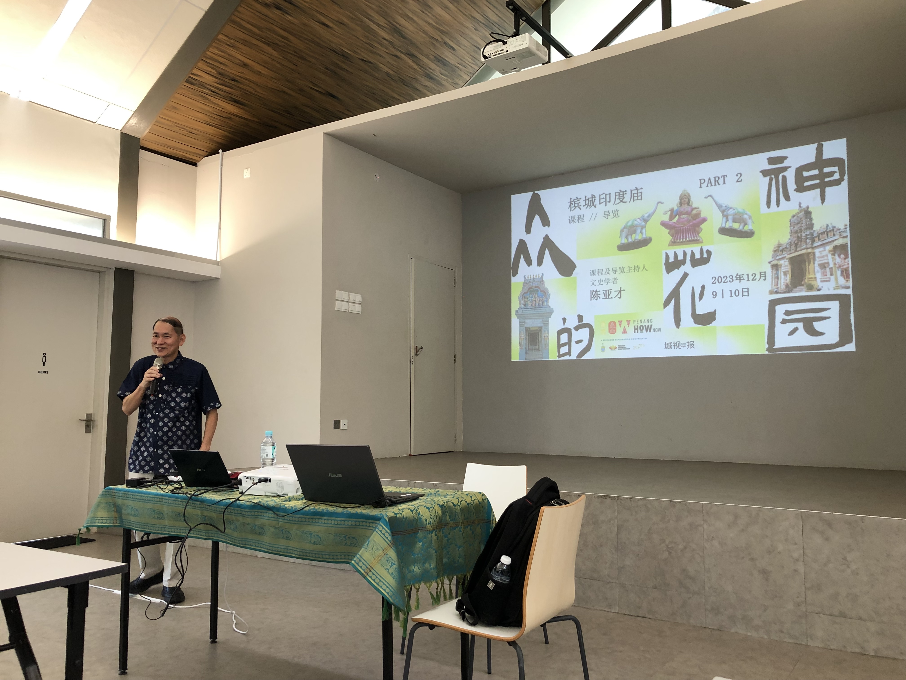
Impressive Part
Cultural Forum
Indian culture, over 5000 years old and undergoing the test of time, has transformed into a colorful and unique characteristic. Each state in India boasts its own solid and vivid features, contributing to its colorful and unique characteristics. As people delve deeper, they uncover much more about India that remains unknown to them. Echoing the adage “You don’t know what you don’t know,” as mentioned in “Indian Market Characteristics” by Ravindra Vasisht, let’s explore the vibrant culture of India.
After engaging in these two days of enriching courses and guided tours, it felt like immersing oneself in a comprehensive exploration of Indian culture at a profound level. On the first day, Teacher Tang Ah Chai systematically discussed the origins of Indian culture, including the birth of civilization and the caste system, along with exploring magnificent classics such as the Mahabharata and Ramayana. Furthermore, it’s fascinating to note the deep influence of Indian culture on Southeast Asia and East Asia, evident in cultural elements such as the shadow puppet show Wayang Kulit in Malaysia and Indonesia, the Ramakien in Thailand, and the renowned novel “Journey to the West” (西遊記) in Chinese culture.
Moreover, delving into the Vedic classics, the Puranas, the Upanishads (which explore the unification of Atman and Brahman), and the Aranyaka (resembling the Indian version of career planning), Teacher Tang employed a life-oriented narrative style that intrigued my interest, prompting me to carve out time to gradually explore these Hindu classics.
Guided Tour
The guided tour of the Indian temples and museum was particularly fascinating. During this experience, thoughts of the “Chettiar ethnic group” came vividly to mind. This community migrated from India to Malaysia and primarily involved themselves in trade, weaving, agriculture, and land ownership.
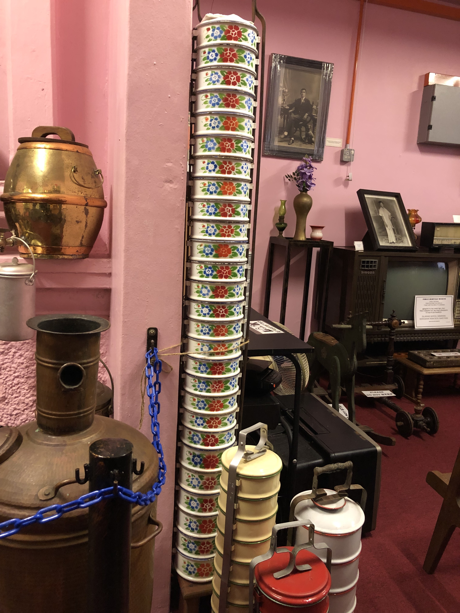
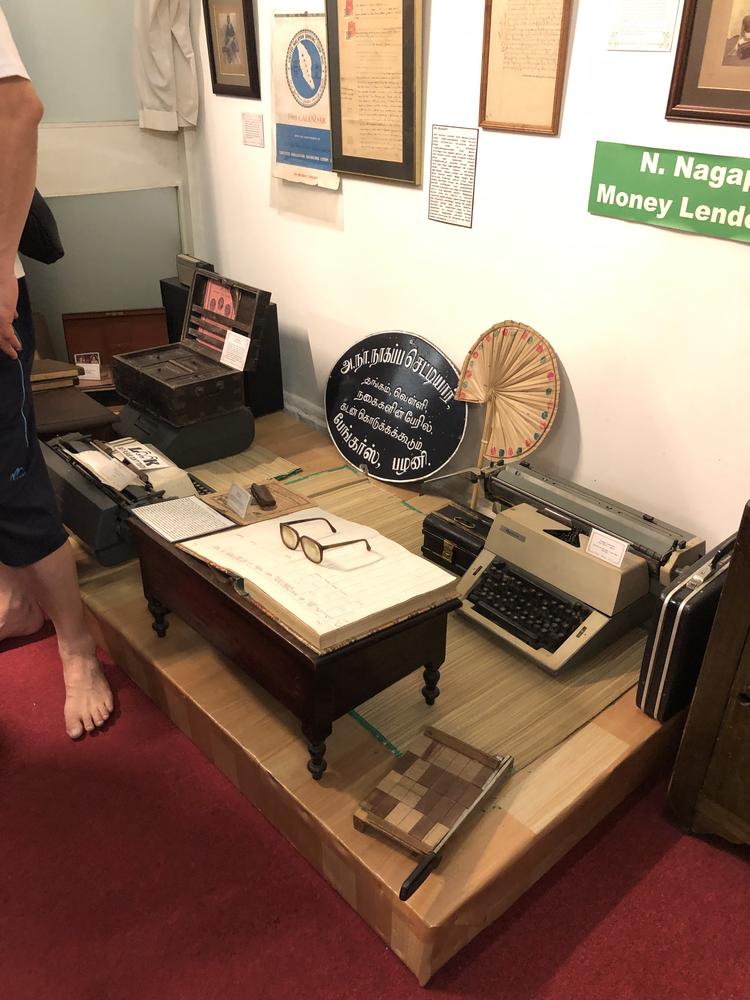
During my visit to the Penang Indian Heritage Museum, I delved into the story of the united force of the Chettiar family. Additionally, I was astounded to see over 20 lunch boxes towering above ordinary size, a testament to the huge size of the family during that period.
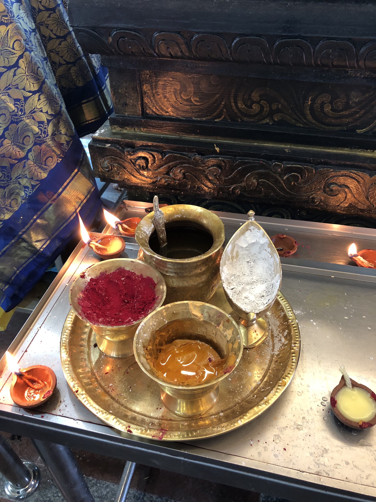
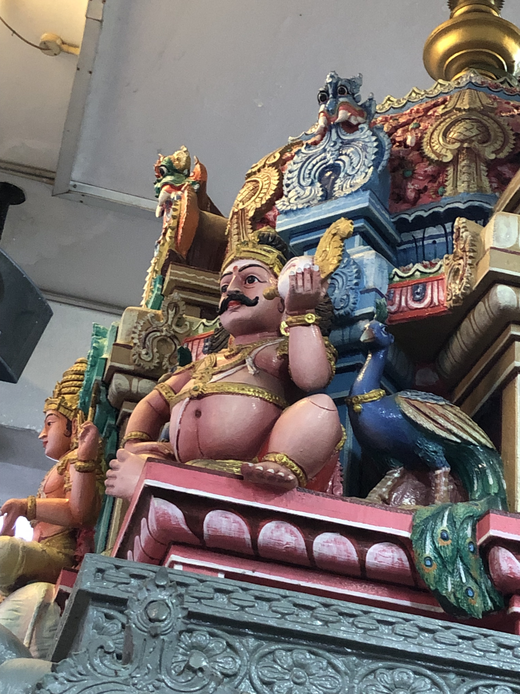
Different color powders have different meanings:
White: This universal color signifies liberation and the freedom from the cycle of reincarnation. It serves as a reminder that individuals will eventually be reborn and ultimately cremated, akin to the transformation into white ashes.
Red: The red dot, symbolizing love and bravery, not only adorns married women but also acts as a protective emblem. Its symbolism extends to safeguarding women and their husbands from the evil eye, ensuring the sanctity of their intimate relationships.
Yellow: Fashioned from turmeric powder, the yellow dot, applied on the forehead and sometimes the whole body, offers a cooling effect, soothing the mind. It also stands as a symbol of wealth and prosperity.
Holy Water: Following pooja/puja (offering), priests bestow blessings through prayers and the distribution of holy water. Typically, devotees use their right hand to receive and drink this consecrated water, symbolizing blessings and the beckoning of fortune.
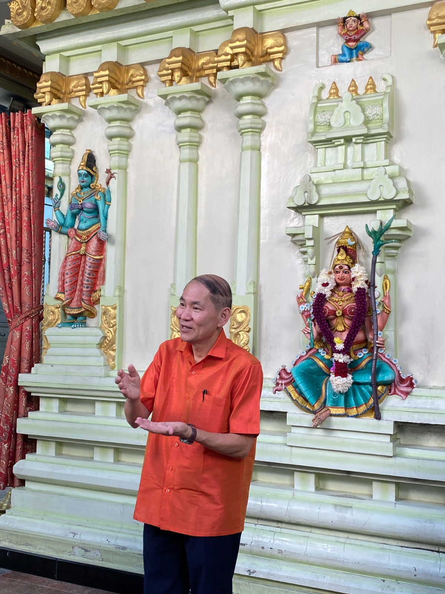
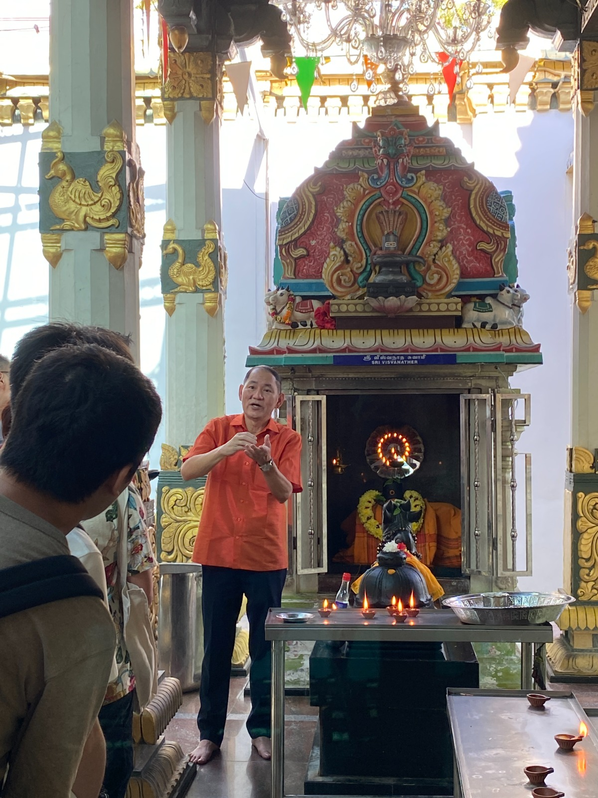

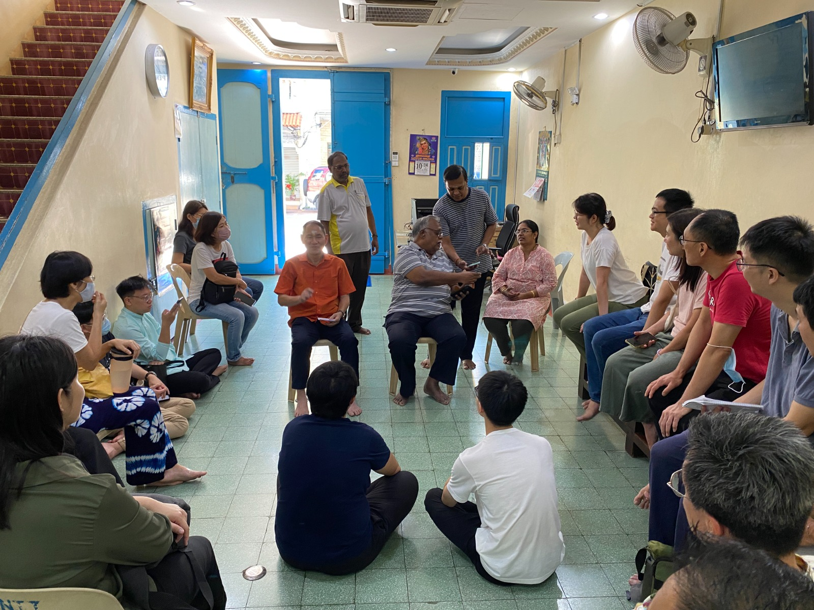
The most remarkable experience occurred during our visit to Nagarathar Kovil Veedu on the second day, where we had the opportunity to engage directly with Mr. Shiva, overseeing the Penang Nagarathar Sivan Temple. He shared that their ancestors arrived in Malaysia bearing Lord Murugan’s golden Vel (spear) and emphasized their enduring principle of utilizing earned wealth for divine worship. In our brief interviews, it became evident that the Chettiar community excels in business and lending, renowned for their “honest” and “trust.”
Although the Chettiar family is no longer engaged in business lending as the primary industry in the past, it is scattered in various fields. Some are lawyers, doctors, software and hardware engineers, professors (teachers), etc. You can feel that Chettiar people are proud of their identity and reveal some confidence and pride.
Even today, they still receive requests for loans, whether for tuition fees or home purchases. The symbolic significance outweighs the material aspect, with a hope to usher in good fortune, akin to the Chinese “bat” concept of ‘The arrival of good fortune (福到)’—this aspect emerged as a particularly captivating part of our conversations.
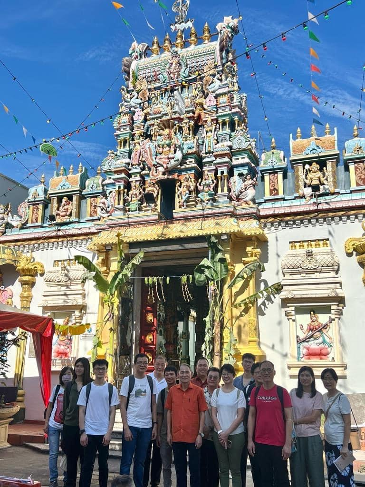
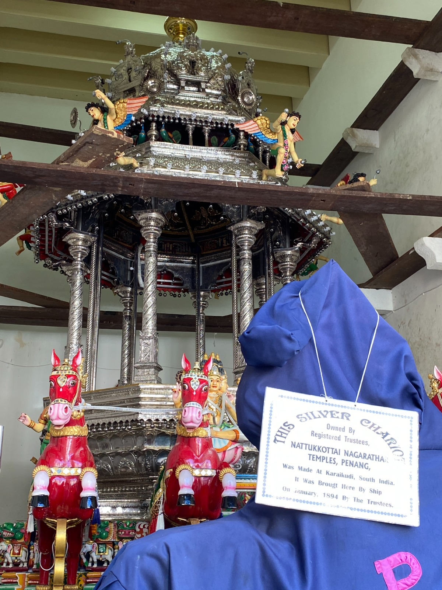
Key Takeaways
The more you know about India, the more you don’t know!
It is worth participating in this cultural activity with teacher Tang Ah Chai’s detailed explanation, which makes the intricate Indian culture easy to understand and accessible to everyone of all ages.
To conclude, through this 2-day Indian cultural activity (Garden of Gods), I realized how possible it is to break the race barriers between others. The key is to understand different cultures and respect each other.
In the end, all of us were blessed and embarked on the next journey in our life.

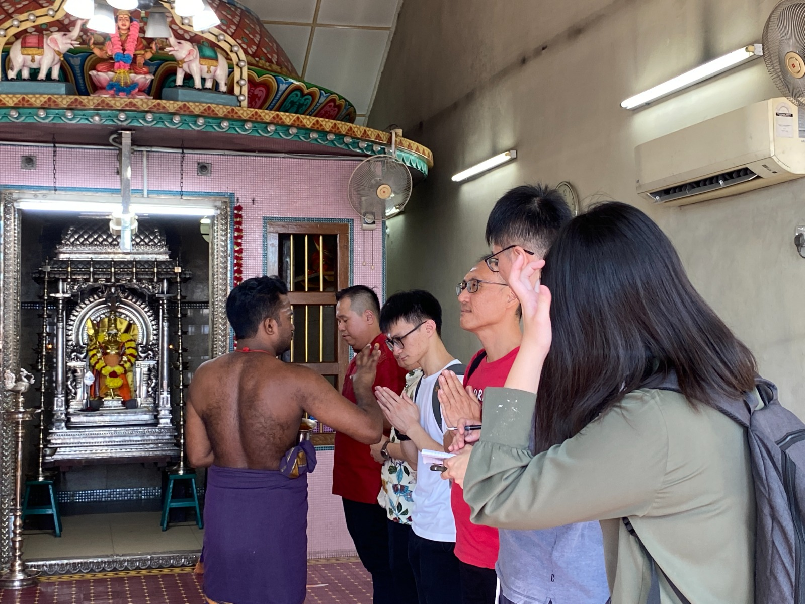
My journey to Indian culture is still ongoing. Please stay tuned!